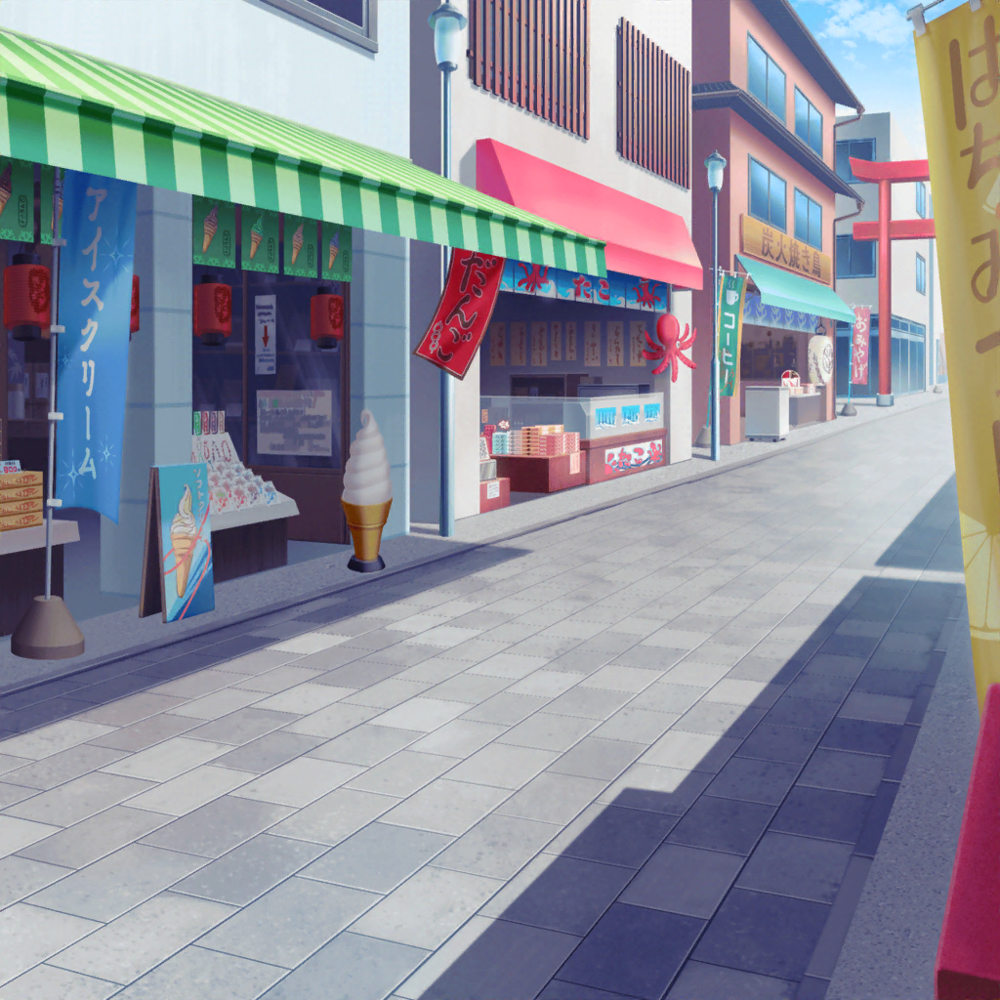

井ノ島
巴
つぐ、お土産買う時間とれてよかったな
つぐみ
うん！ わざわざお土産屋さんに寄ってくれてありがとね。
うーん、何にしようかな？
つぐみ
イヴちゃんだし、やっぱりかわいいものがいいよね？
巴
だな。
部屋に飾っておける小物とかどうだ？
つぐみ
そうだよね。飾れる小物、飾れる小物……うーん……
モカ
えー、あたしが提案したフグの置物は却下〜？
つぐみ
も、もうちょっとかわいくて、井ノ島らしいものがいいかな。
あ、こういうのどうかな？
巴
海の中をイメージしたスノードームか……キレイでかわいいな。
イヴらしい感じがしていいんじゃないか？
モカ
いやいやー、これだったらどこでも買えちゃうでしょー？
じゃーん。こういうのは？
モカ
井ノ島って書いてあるし、わかりやすいと思うんだよねー
巴
この龍のキーホルダーか？
なんていうか……勢いがあるお土産だな
つぐみ
確かに、井ノ島って書いてあるけど……。
い、イヴちゃんこういうの好きかな……？
モカ
んー、イヴちんなら喜ぶと思うよー。
この書体も、ザ・日本って感じだしー
つぐみ
こ、このお菓子とかは！？
パスパレのみんなでもわけられるだろうし……
巴
それいいな、当たり障りないし。
このクッキーなんてどうだ？
包装紙の絵柄もかわいいし、クッキーも美味しそうだぞ
モカ
うーん……るんっ♪ とこない。
絶対さっきのキーホルダーのがいいよ〜
巴
イヴかあ……確かに、かわいい小物とかは絶対に似合うけど、
どうせならもっとツボをつきたい気もするな
つぐみ
うん、イヴちゃんが本当に好きそうなものを
選びたいよね
モカ
絶対、龍のキーホルダーだってばー。
イヴちん、ブシドーとか好きだし
巴
武士道と龍ってあんまり関係ないだろ……
つぐみ
まさかお土産選びに、こんなに悩むなんて思わなかったなあ……
誰かに買っていくのは楽しいけど、難しいね
つぐみ
……ビーズのストラップはかわいいけど、
ありきたりな感じがするし
モカ
あ！ いいもの見つけたー
巴
また変なものだろ……
モカ
何をおっしゃる。これが目に入らぬか〜
つぐみ
提灯……？
モカ
日本って感じするし、あと、井ノ島って書いてあるし。
時代劇で侍が持ってそうだし。
一応、部屋にも置けそうだし
つぐみ
あはは、イヴちゃん喜びそうな気がする！
そういう方向で探してみようかな
つぐみ
巴ちゃん、どう思う……って、あれ？
巴ちゃん？
巴
そういう系のお土産だったら任せてくれ！
やっぱり、これだろ！
モカ
木刀？
巴
イヴ、武士道とか侍とか好きだろ？ だったらこれしかないって！
井ノ島って彫ってあるから、井ノ島のお土産だっていうのも
ちゃんとわかるし
モカ
いいね〜。トモちん、ナイスチョイス〜
つぐみ
ほ、本当に大丈夫かな……？
イヴちゃん、木刀ならもう持ってるんじゃ……
モカ
井ノ島って書いてある木刀はさすがに持ってないんじゃない？
コレクションの１つに加えてもらおうよ〜
巴
アタシもそれがいいと思う！
イヴ、絶対喜ぶって！
つぐみ
い、一緒にお菓子も買っていくとかどうかな！？
木刀だけっていうのも……
モカ
それじゃ逆に中途半端じゃない？
やるならやるでこういう系１本に絞ったほうがいいと思うなあ
巴
ああ、アタシもそう思う。
つぐ、アタシ達を信じてくれよ！
つぐみ
そ、それじゃあ……これ、買ってくる！
巴
ああ！ イヴ、喜んでくれるといいなあ
モカ
だねー。きっと、めーっちゃ喜んでくれると思うな〜